La fenêtre Librairie affiche tous les projets qui sont disponibles dans l'application. Selon la configuration de Pinpoint, il pourrait s'agir de publications de Visit Manager ou le contenu du Serveur Pinpoint 7, qui a été téléchargé via le module du Data Manager.
Lorsqu'un projet est sélectionné, la liste des publications disponibles dans ce projet s'affiche. Lors de la sélection d'une publication, la hiérarchie manuel / publication sera affichée dans la section Table des Matières ci-dessous.
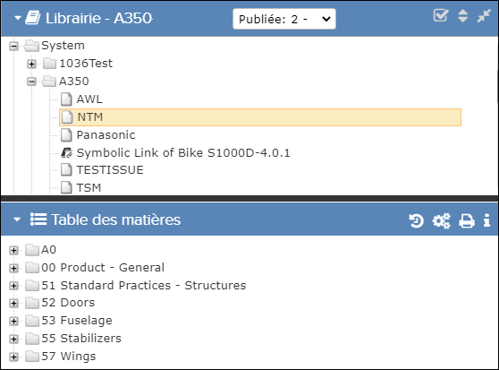
Libraire et Table des matières
Lors du passage d'un projet à l'autre, l'application ouvre le nouveau projet dans un nouvel onglet du navigateur. Vous devez confirmer que vous autorisez l'application à ouvrir dans une nouvelle page. Le nouvel onglet obtient le nom du projet que vous ouvrez.
| Component | Description |
|---|---|
| Cliquez sur cette icône pour réduire / agrandir le volet de la Bibliothèque. | |
| Si un projet est sélectionné, l'en-tête de la
Bibliothèque affiche le nom du projet sélectionné. Si la publication a plus d'une révision et vous avez les autorisations appropriées, l'en-tête a une liste déroulante de sélection de révision qui vous permet de sélectionner une révision. Faire référence Sélection de révision. |
|
Non applicable pour Pinpoint Standalone Light. Remarque : Cette icône n'apparaît que pour les utilisateurs disposant
de la liste de Bibliothèque de peuvent Réorganiser
privilège.
Cliquez sur cette icône pour ouvrir la boîte de dialogue
Réorganiser les
Librairies
or Réorganiser
<choisie
librairie>. La boîte de dialogue vous permet de
modifier manuellement l'ordre des bibliothèques et/ou des publications via une
interface glisser-déposer (une seule bibliothèque peut être déplacée à la fois).
Dès que vous cliquez sur le bouton Enregistrer, le volet
librairie
affiche le même ordre pour les bibliothèques et/ou des publications
que vous définissez avec la boîte de dialogue. Tous les autres
Pinpoint ou utilisateur en ligne de Pinpoint Mobile qui s'actualise ou se connecte
après vous avoir cliqué sur le bouton Enregistrer verra
également la nouvelle commande de
bibliothèque.Remarque : Si
vous ne sélectionnez pas de bibliothèque, l'ordre de toutes les bibliothèques
racine est modifié. Si vous sélectionnez une bibliothèque, l'ordre des enfants
directs dans cette bibliothèque est
modifié.
|
|
| Cliquez sur cette icône pour réduire / agrandir toute la colonne de volets (y compris Volets Bibliothèque et Table des matières). | |
| Cliquez sur cette icône pour voir les publications. | |
| Cliquez sur cette icône pour voir le contenu de publications dans la fenêtre Table de Matières. | |
| Cette icône indique que la publication est une publication symbolique. Lorsque vous affichez la publication, les métadonnées (numéro de révision, statut de publication, date de publication, etc.) concernent la publication d'origine (cible). La Table des matières est également pour la publication originale. | |
| ß |
Cette icône apparaît lorsque vous survolez un nom de publication dans le
volet de la bibliothèque. Cliquez sur l'icône pour appliquer
un signet au niveau de la publication. L'icône change de couleur lorsque vous
ajoutez le signet. Cliquez sur l'icône |
Sélection de révision
Non applicable pour Pinpoint Standalone Light.
Si la publication comporte plusieurs révisions, l'en-tête de la Librairie affiche une liste déroulante qui vous permet de sélectionner la révision du publication que vous souhaitez afficher, si vous disposez des privilèges appropriés. Voici un exemple de publication A350:
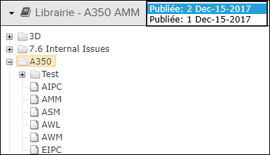
- Vous devez avoir une autorisation de lecture pour le privilège Peut Approuver ou Rejeter les révisions préliminaires de voir la liste déroulante et basculer entre plusieurs révisions. Sans cette autorisation, vous ne pouvez voir que les dernières versions publiées des publications pour lesquelles vous avez des autorisations de lecture.
- Avec le privilège Peut libérer ou annuler des révisions brouillon, vous pouvez également libérer, annuler ou recharger des révisions. Référer à Travailler avec des révisions pour plus d'informations.
- Si vous avez le droit de lecture sur le privilège Peut afficher toutes les révisions autorisées, vous pouvez afficher toutes les révisions antérieures de les publications pour lesquelles vous avez lu des autorisations.
Accès aux révisions actuelles uniquement
Non applicable pour Pinpoint Standalone Light.
Si votre administrateur a activé le privilège Accès uniquement aux révisions en cours,
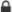
une icône de verrouillage apparaît avant le nom de la publication pour les publications avec une nouvelle révision. Par exemple: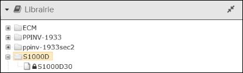
Lorsque vous sélectionnez une publication verrouillée, une alerte apparaît:
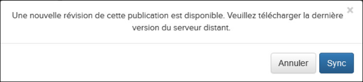
Cliquez sur le bouton Syncroniser pour mettre à jour la publication vers la dernière révision.
Accusé de réception du contrôle des exportations
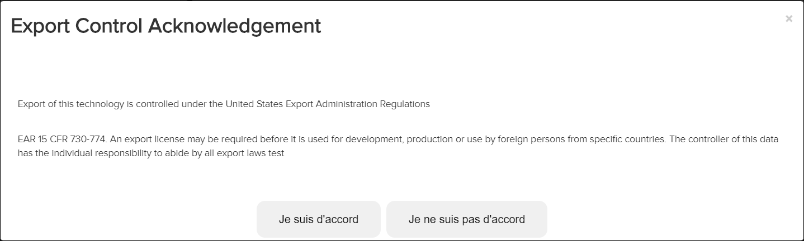
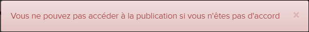
Connexion au serveur Pinpoint Data Manager distant
Non applicable pour Pinpoint Standalone Light.
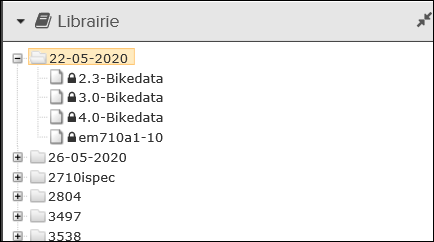
Lorsque vous sélectionnez la publication verrouillée, un message apparaît:
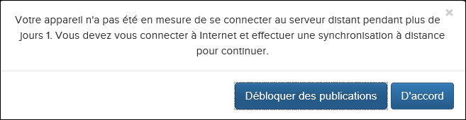
- Cliquez sur le bouton D'accord pour vérifier votre connexion
Internet. Si une connexion est disponible, the lock icon est supprimé. Sinon, le message
d'avertissement apparaît de nouveau.Remarque : S'il y a une connexion disponible, l'icône de verrouillage est également supprimée lorsque vous actualisez la page.
- Si vous ne parvenez pas à vous connecter à Internet et à effectuer une
synchronisation, cliquez sur le bouton Débloquer des publications
pour générer un code de défi à envoyer à l'administrateur. La boîte de dialogue
Débloquer des publications apparaît:
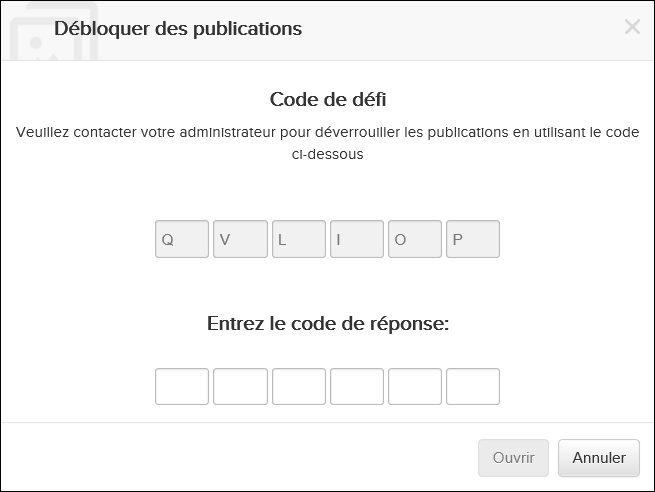
- Fournissez le code de défi à l'administrateur. L'administrateur utilise ce code
pour générer un code de réponse dans Data Manager pour vous
envoyer.Remarque : L'administrateur doit disposer des autorisations pour le privilège Peut générer un code de réponse pour déverrouiller les publications.
- Entrez le code de réponse dans la boîte de dialogue Débloquer des
publications.
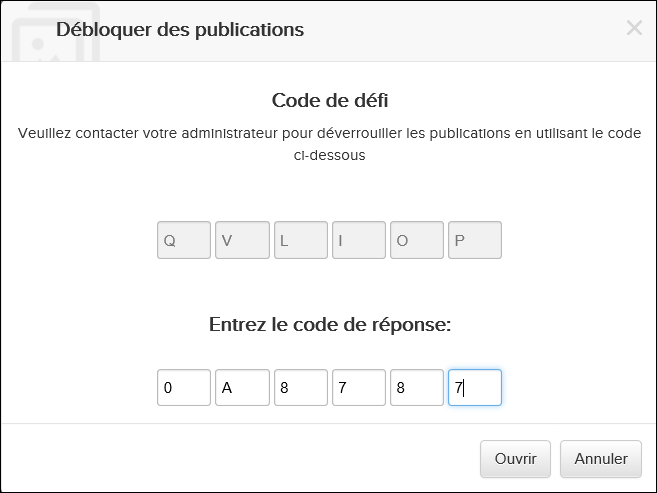
- Cliquez sur le bouton Ouvrir pour déverrouiller et accéder à la publication
- Fournissez le code de défi à l'administrateur. L'administrateur utilise ce code
pour générer un code de réponse dans Data Manager pour vous
envoyer.
Message d'avertissement hors ligne
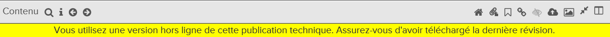